Runners
NPC ships
The boats that make the sea feel alive: traders, raiders, cutters, ferries and hulks.
NPC ships
Built on player hulls, or on hulls of their own.
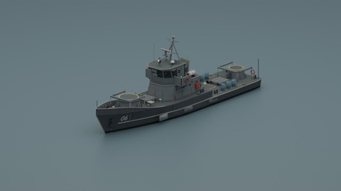
Raider boatN-01 · on the DartFinal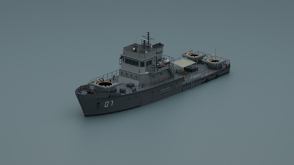
Raider gunboatN-02 · on the GunrunnerFinal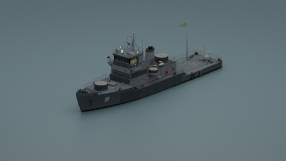
Toll boatN-03 · on the Armoured runnerFinal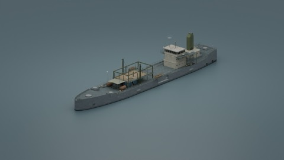
Pirate mother shipN-04 · on the FreighterFinal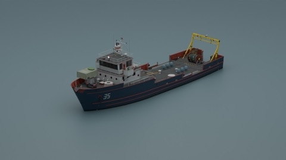
False fishing boatN-05 · on the TrawlerFinal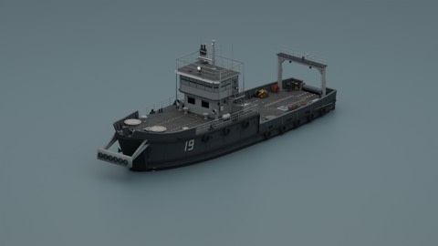
Ram tugN-06 · on the Recovery WorkboatFinal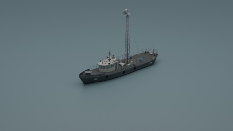
Spotter boatN-07 · on the WispFinal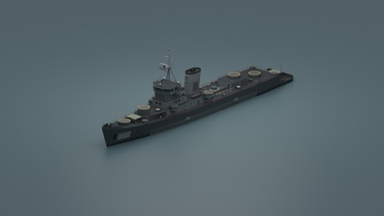
Deserter warshipN-08 · on the FrigateFinal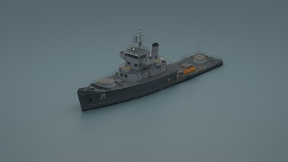
ARI cutterN-09 · on the Patrol EscortFinal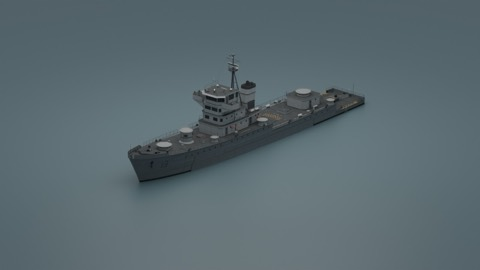
Navy inspection cutterN-10 · on the CorvetteFinal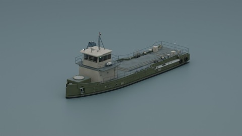
Rig tenderN-11 · on the Supply runnerFinal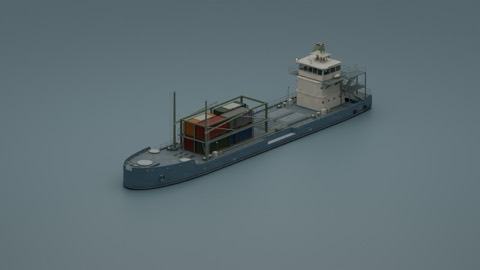
Laden WorkhorseN-12 · on the WorkhorseFinal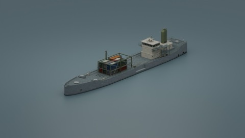
Laden FreighterN-13 · on the FreighterFinal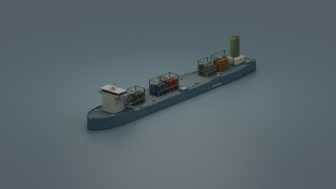
Laden LeviathanN-14 · on the LeviathanFinal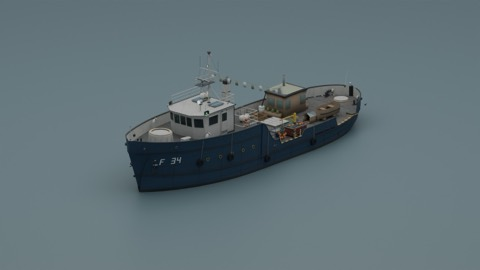
Family boatN-15 · on the Fishing boatFinal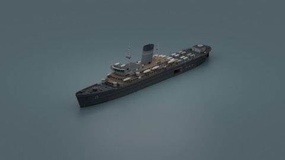
Refugee ferryN-16 · on the Armed linerFinal- Sail conversionN-17 · on the MuleNot used
- Half and halfN-18Not used
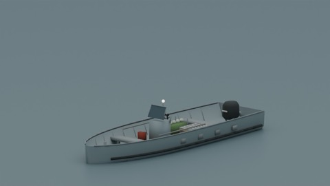
Open skiffN-19Final- Harbour tugN-20Not used
- BargeN-21Not used
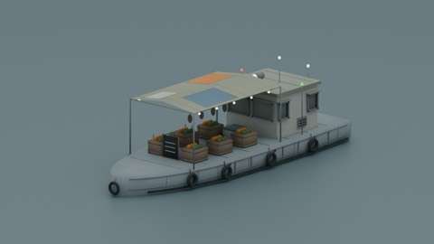
Market boatN-22Final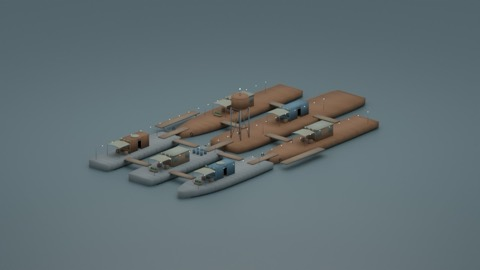
Raft townN-23Final- Twin hullN-24Not used
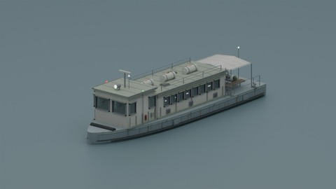
Crew boatN-25Final- Store hulkN-26Not used
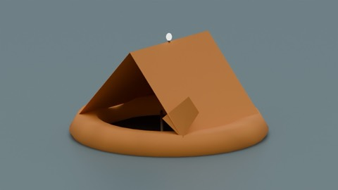
Lifeboat and life raftN-27Final- Gun bargeN-28Not used
- Clinic boatN-29Not used
- Bunker boatN-30Not used